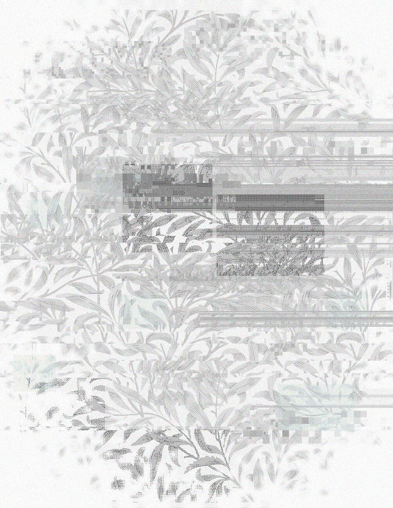
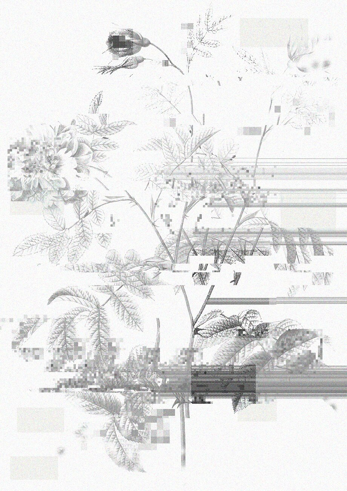
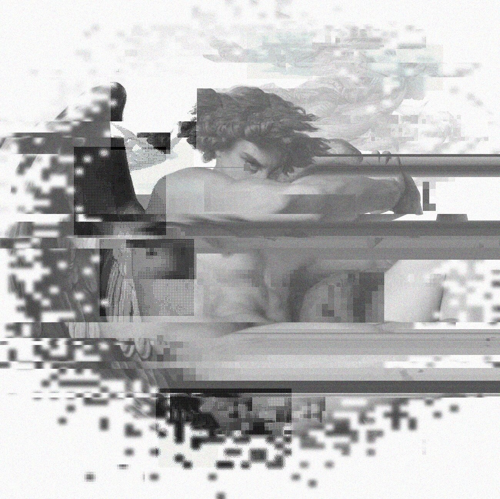
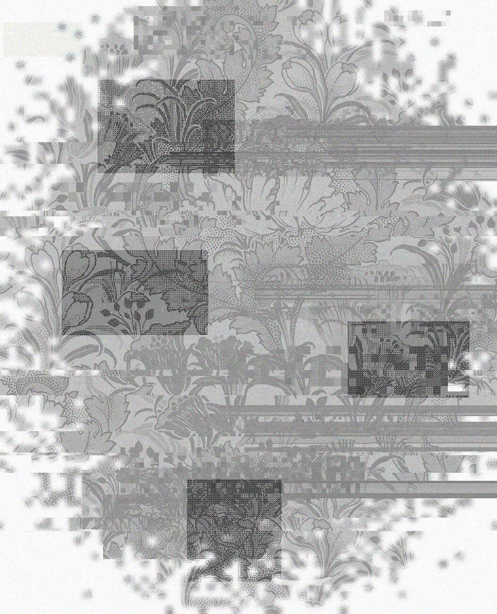
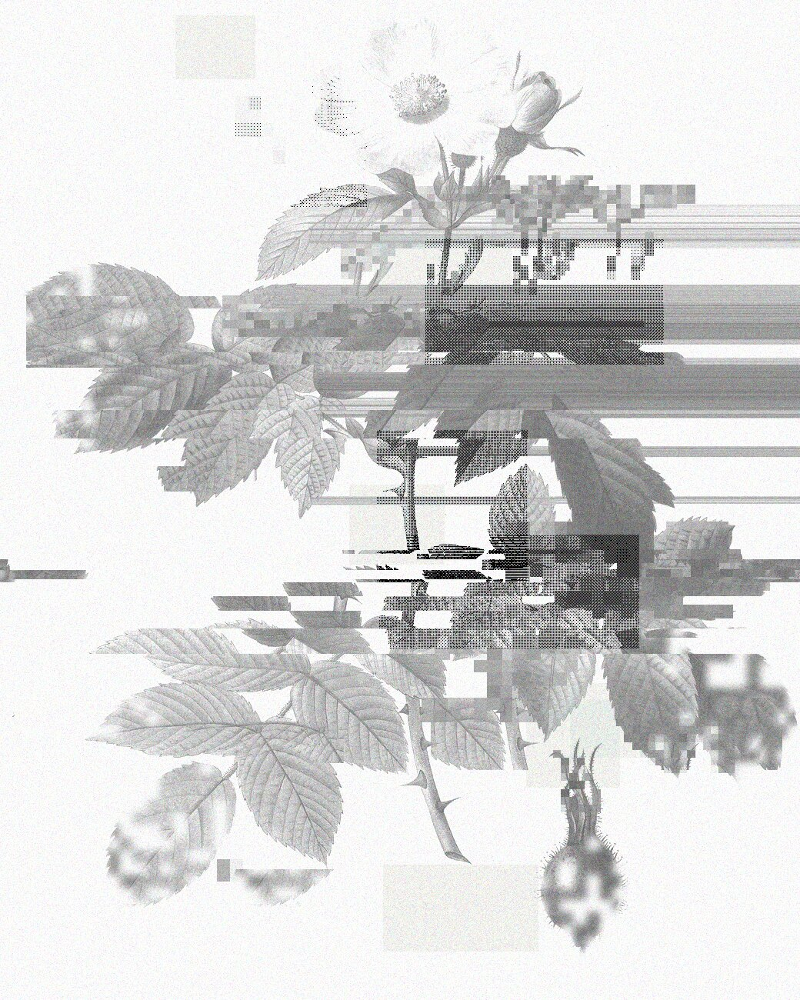
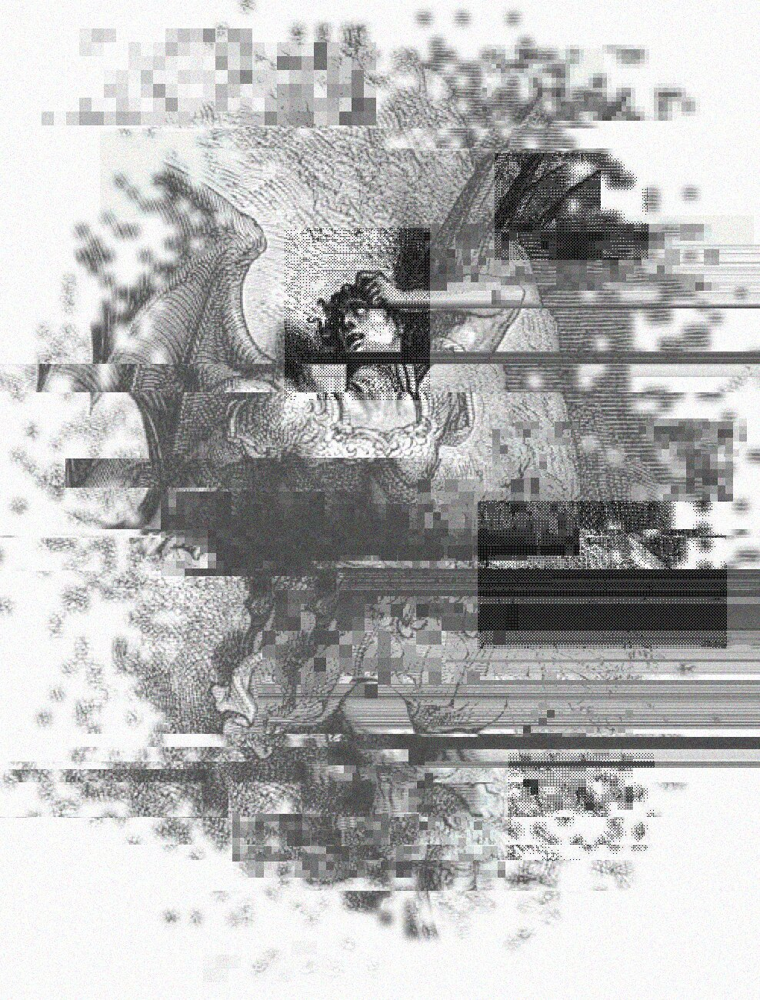
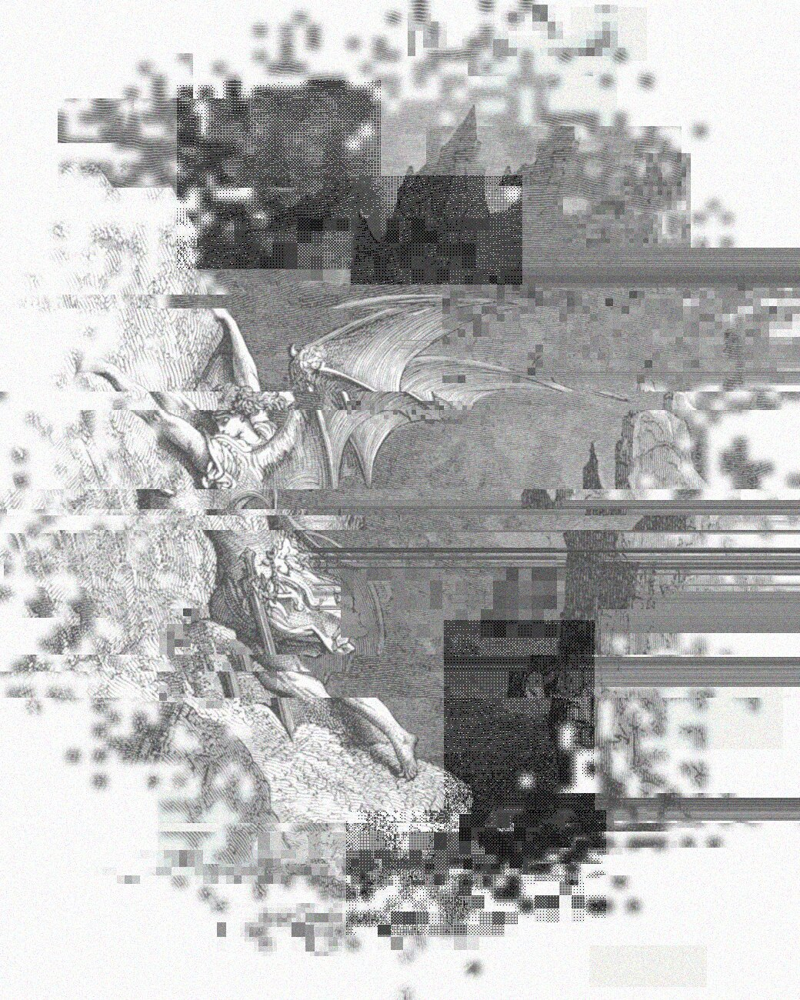
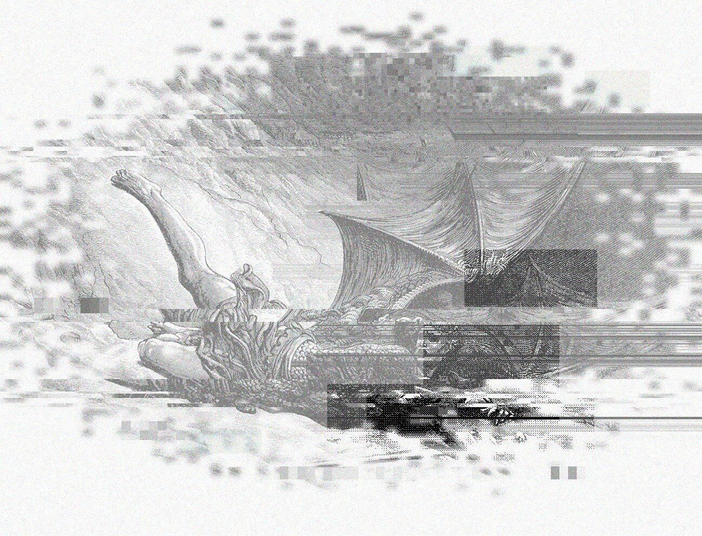
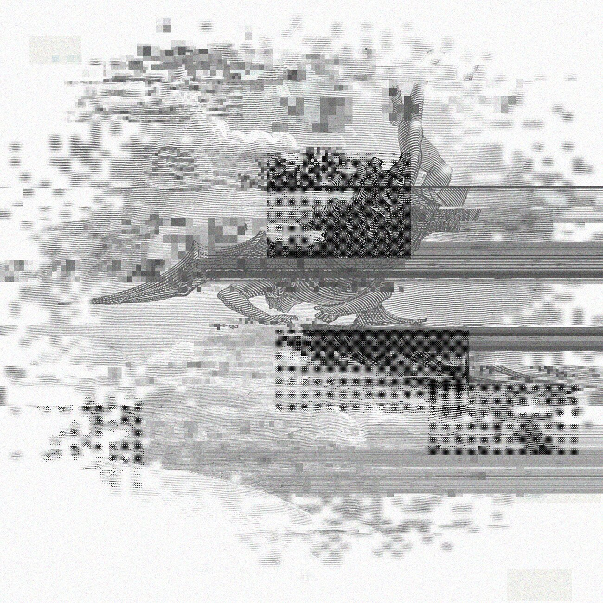

yoshiro
motion design, video editing, logo animation, promo videos, telegram bots, ai automation.



about
hi! i’m Artem. i do design and i’m pretty good at editing :)
i take a logo or an idea and give it life — movement, rhythm and sound. i animate logos, build promo videos and edit for youtube and social media.
i love dark aesthetics and old engravings — that’s where this site comes from.
write me — let’s bring your idea to life.

skills
- 01logo animation
- 02promo videos
- 03video editing
- 04sound design
- 05telegram bots
- 06ai automation
- 07ai art direction

works
